Introduction
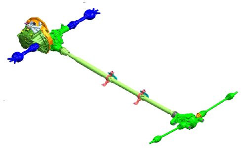
The transmission is the permanent integral type with a central ''Torsen Twin C'' differential and front differential built into the casing made by the Torsen group.
The torque supplied by the engine enters the F40 gearbox, with specific ratios to ensure optimum use of the power and torque to maximize the efficiency of the four wheel drive.
At the gearbox output, the torque reaches the central Torsen differential, by means of a reduction cylinder pair with helical teeth; the drive torque is distributed between the front and rear axles according to a base ratio of 56/44.
The torque distributed to the front axle enters the open type front differential incorporated in the Torsen casing and is shared between the two wheels on the front axle.
On leaving the Torsen, the torque to be distributed to the rear enters the idler unit transferring torque to the rear axle (PTU: Power Transmission Unit).
The PTU comprises a cylindrical gear pair with helical teeth and a bevel drive that transfers the engine torque to the propeller shaft.
The propeller shaft, in turn, directs the engine torque to the rear differential (RDA: Rear Differential Axle) where the distribution to the two wheels on the rear axle takes place.
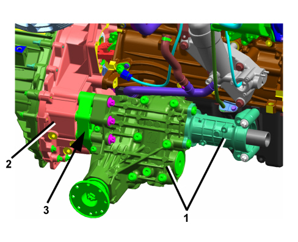
The PTU (1) is fixed to the transmission gearbox (2) near the central differential by four bolts and centred by two bushes that work on the gear casing spacers (3); between the PTU flange coupling and the gearbox spacer an o-ring (4) is placed - this is replaced each time it is taken apart.
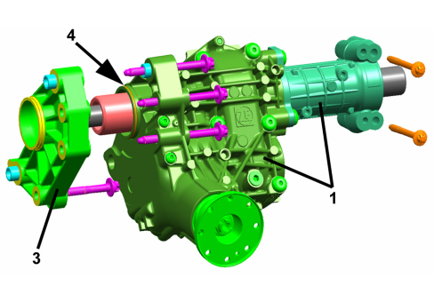
The tightening of the PTU is then completed by two further bolts that join it directly to the engine oil sump.
Gearbox
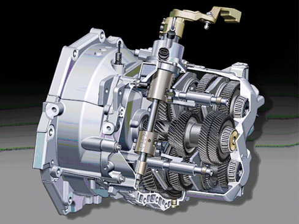
The gearbox used for this system is the six gear ratio F40, updated to optimise engine torque delivery and at the same time adjust the series of integrated gearbox ratios.
Gear engagement
1st speed engagement
2nd speed engagement
3rd speed engagement
4th speed engagement
5th speed engagement
6th speed engagement
Reverse engagement
Synchronisers
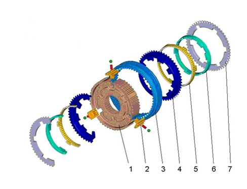
1. Hub for sliding sleeve
2. Sleeve locking block
3. Sliding sleeve
4. Synchronizer outer race
5. Twin cone seal
6. Synchronizer inner race
7. Flange
Centre differential
The centre differential is the Torsen Twin C type and also contains the transmission front differential in the casing. It comprises two half shells on the outside of which the ring gear that meshes with the gearbox final gear is tightened; the casing also houses the eight planet gears with helical teeth that rotate with the casing and transmit the drive for the rear axle to an outer ring gear and the drive for the front axle to an inner ring gear connected directly to the front differential by means of ribbing.
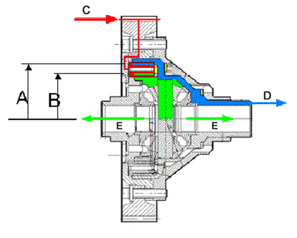
A. Meshing line between planet gear and rear axle drive ring gear
B. Meshing line between planet gear and front axle drive ring gear
C. Drive entry into centre differential (coming from the gearbox)
D. Drive output to rear axle
E. Drive output to front axle
The sharing of the torque between the two axles takes place by means of a series of metal rings that control the drive for the two axles.
When one of the axles tends to rotate more than necessary following variations in the grip conditions or critical connections connected to the vehicle dynamics (understeer, oversteer, etc.), the planet gears that turn with the casing without rotating around their own axis under normal circumstances now tend instantly to rotate around their own axis producing axial thrusts typical of toothed wheels with helical teeth. These thrusts are discharged to the Torsen differential inner races which instantly oppose the relative movement between the outer ring gear (rear axle) and inner ring gear (front axle), thereby transferring the torque from the axle that is attempting to turn faster to the slower axle.
Obviously, depending on whether it is the outer ring gear that wants to rotate faster or, alternatively, the inner ring gear that wants to rotate faster, the direction of the axial thrusts changes, involving different rings to discharge the forces involved, transferring the torque from one axle to the other depending on requirements.
The possibility of locking the Torsen, which allows these transfers of torque to be controlled, is not infinite; in effect, when the maximum torque transfer percentage from one axle to the other is reached the Torsen opens and allows it to slip between the two ring gears. In these Torsen opening conditions the planet gears rotate around their own axle and the locking control, once the maximum value is reached, no longer increases. This is, for example, the condition produced for a fairly tight bend where the kinematic trajectories imposed by the steering manoeuvre lead the Torsen to become unlocked.
Transmission of drive to rear axle (PTU)
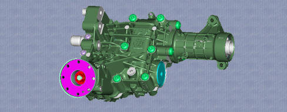
The casing is made from aluminium and the assembly weighs 22.2 Kg. The function of the idler unit, PTU, is to direct the engine torque idler to the rear axle.
The PTU is lubricated internally by its own fluid and not by the same fluid that lubricates the gearbox and differential.
A cylindrical gear pair inside the PTU transfers drive from the Torsen output shaft to a second shaft with a helical wheel on one end that meshes with the wheel on the Torsen output shaft and a bevel gear on the other end that meshes with the pinion, carrying drive to the propeller shaft.
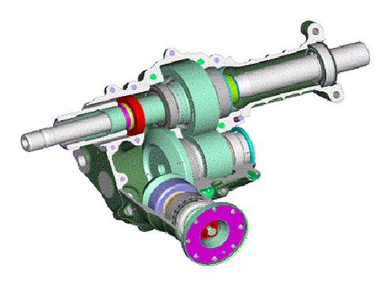
Reduction cylinder pair section
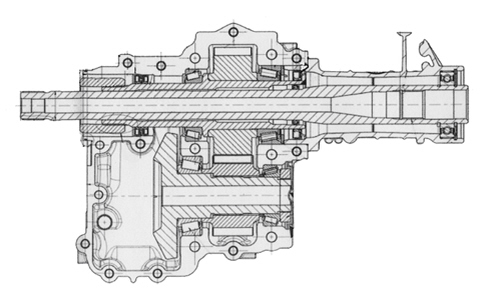
Idler bevel drive section
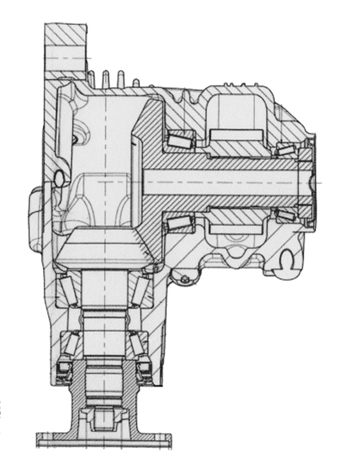
Propeller shaft

The propeller shaft comes in three parts and is connected to the body by means of two mounts. The shaft has the function of transferring the PTU output drive to the rear differential RDA.
Rear differential (RDA)
The casing is made from aluminium and the assembly weighs 17 Kg. The rear differential (RDA: Rear Differential Axle) is the open type and has the function of directing the input drive, coming from the propeller shaft, to the rear axle wheels.
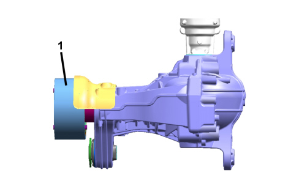
On the coupling flange, a suitable flexible mounting block (1) is fitted with the propeller shaft that absorbs axial vibrations.
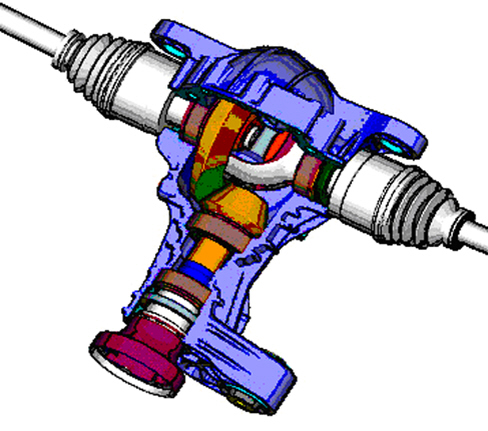
Vehicle dynamics
Driving in a straight line
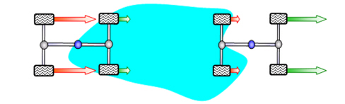
When driving in a straight line, if grip conditions are even, the torque distribution between the axles settles to the specified levels. Small variations in this specified distribution are due to variations in the rolling circumference between the tyres on both axles and the weight distribution between the axles. When the grip conditions between the two axles are no longer the same, as can be seen in the diagram, the torque is moved from the axle with less grip to the one with more grip to counterbalance the slipping of the axle which, from time to time, finds itself in poor grip conditions.
Driving round bends
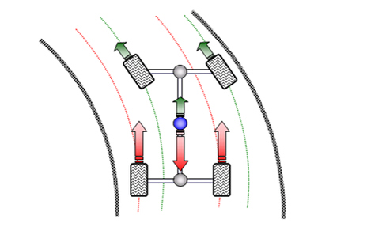
Round bends, when the radius is fairly consistent, the front wheels cover kinematic trajectories that make the actual wheels rotate faster than the rear wheels; in these conditions the Torsen removes torque from the front wheels and sends it to the rear wheels. When the maximum internal locking limit is reached the Torsen opens, allowing the vehicle to follow the trajectory imposed by the steering manoeuvre without the wheels slipping.
Understeer
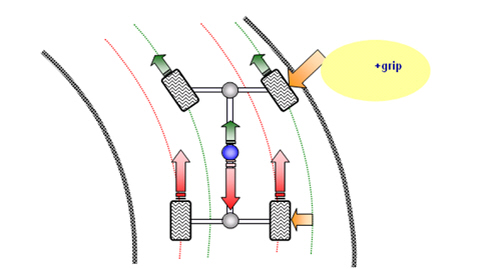
In the event of understeer the front wheels tend to rotate faster following the slipping typical of this manoeuvre, normally due to the grip limit being exceeded and allowing the engine torque to be drained to the ground; this usually happens either through excess torque discharged to the ground or through a decrease in road surface grip conditions. In this situation, as the tyre side road hold margin no longer remains (all the grip is used for the longitudinal part of the tyre) the vehicle tends to extend the trajectory and not follow the bend. In this situation the Torsen removes torque from the front axle and distributes it to the rear axle, returning the lateral grip margin to the front wheels and thereby restoring the stability of the vehicle, obviously within the physical limits of the vehicle dynamics.
Oversteer
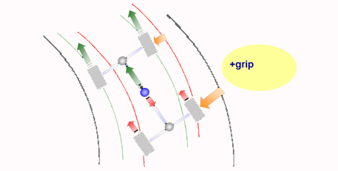
In the event of oversteering the rear wheels tend to rotate faster following the slipping typical for this manoeuvre, normally due to the grip limit that allows the engine torque to be drained to the ground having been exceeded. This usually happens either through excess torque drained to the ground or through a decrease in the road surface grip; in this situation as the tyre lateral road hold margin no longer remains (all the grip is used for the longitudinal part of the tyre) the vehicle tends to pitch at the rear, making the vehicle unstable. In this situation the Torsen removes torque from the rear axle and distributes it to the front axle, returning the lateral grip margin to the rear wheels and thereby restoring the stability of the vehicle, obviously within the physical limits of the vehicle dynamics.